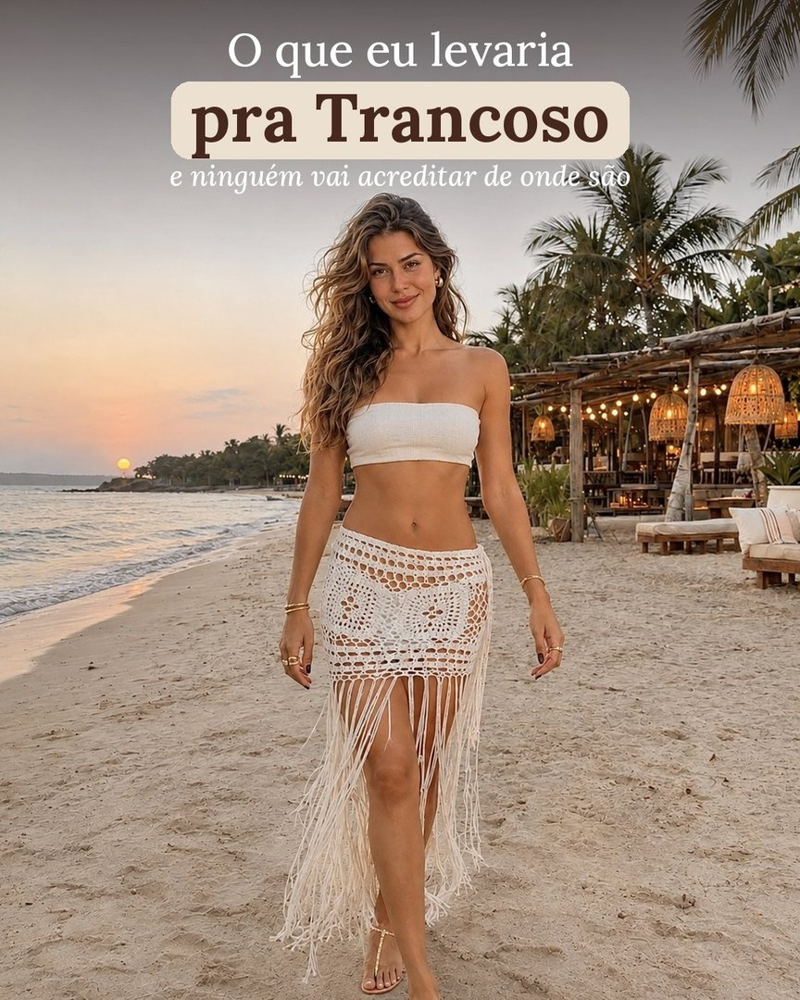
Foto 1Saia de crochê com franjas
Crochê vazado com franjas longas. Tem nas cores bege, branco, café e preto.
O top da foto não está na lista.
Ver a saia na ShopeeCada foto do carrossel está aqui na mesma ordem, com o link da peça na Shopee.

Foto 1Crochê vazado com franjas longas. Tem nas cores bege, branco, café e preto.
O top da foto não está na lista.
Ver a saia na Shopee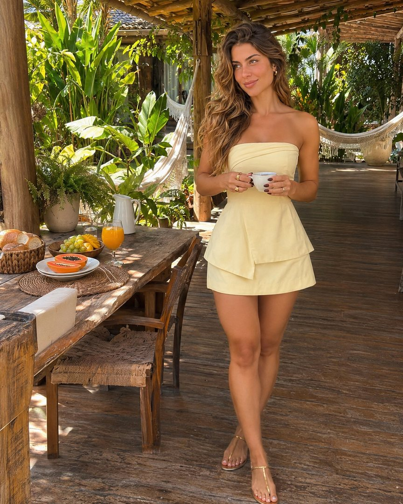
Foto 2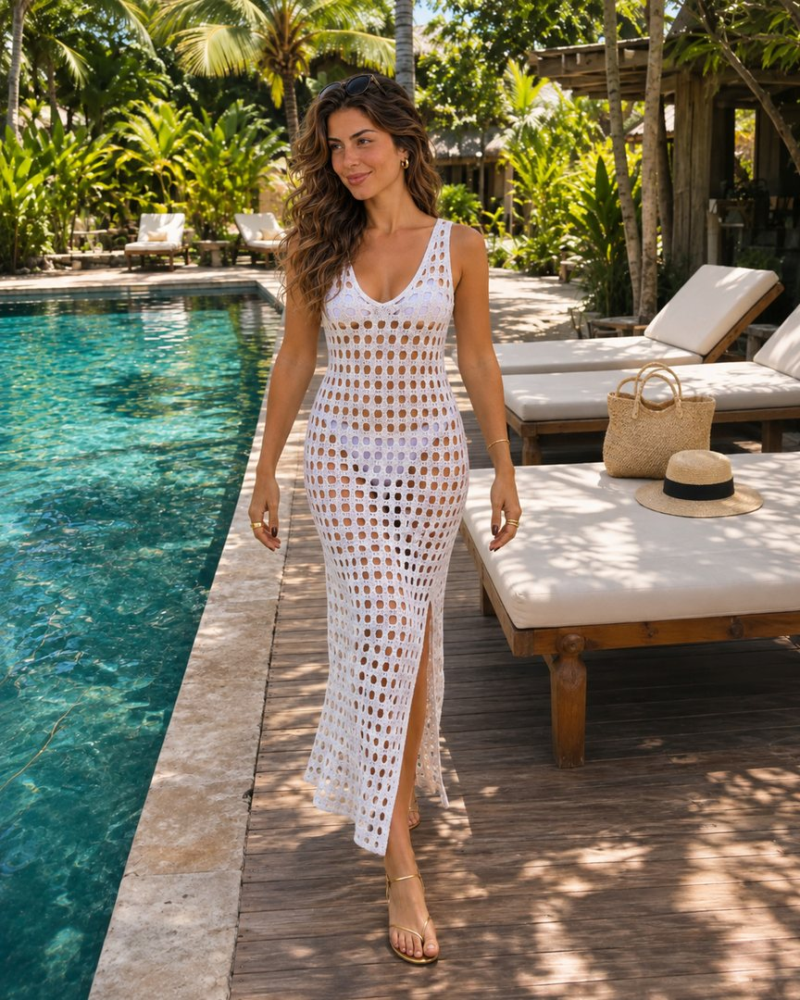
Foto 3Vestido vazado que funciona como saída de praia.
Ver o vestido na Shopee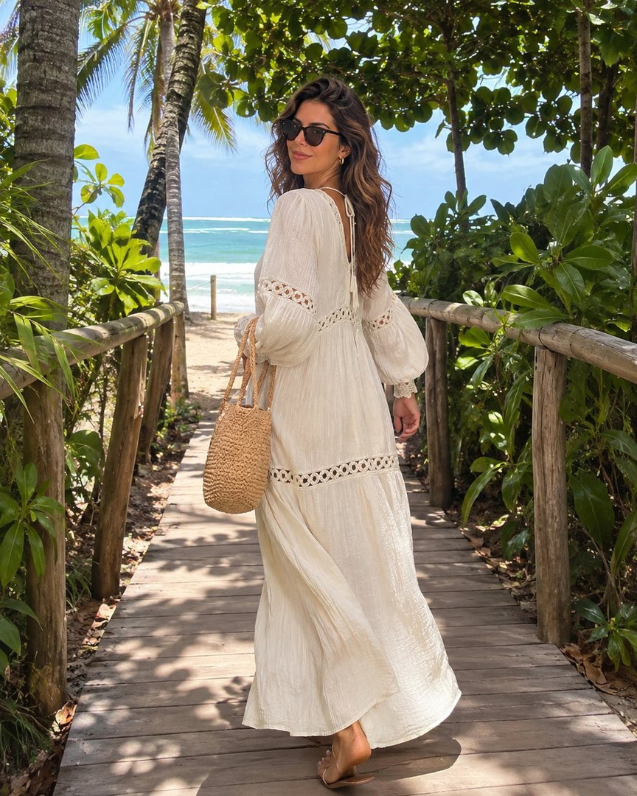
Foto 4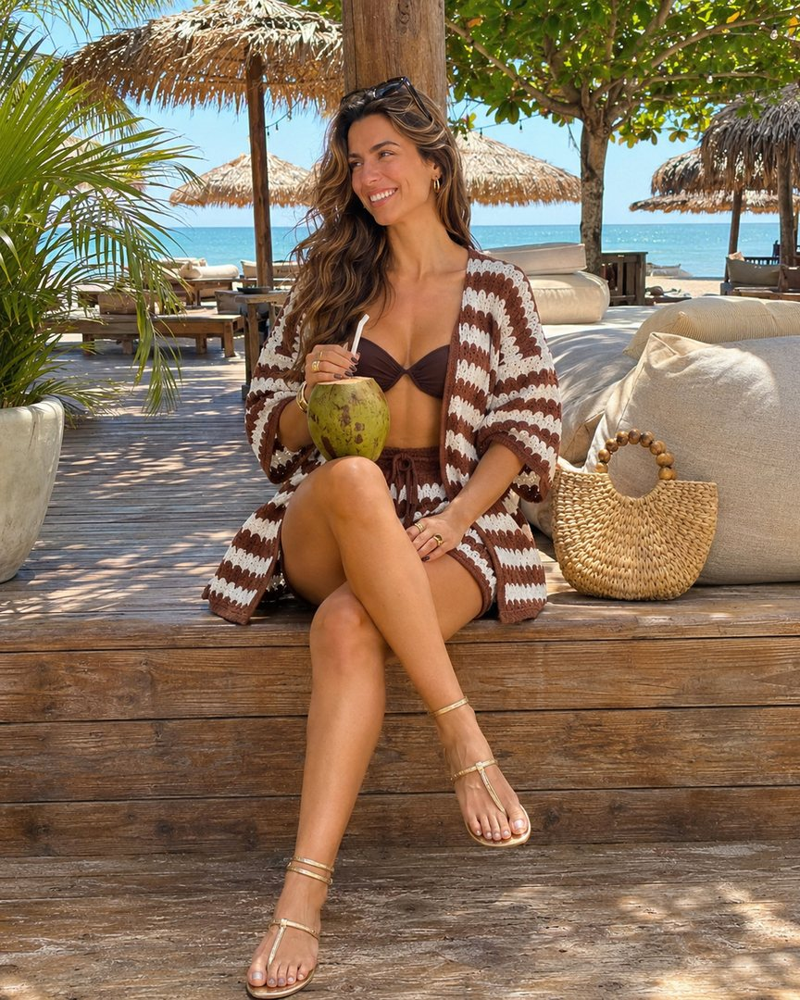
Foto 5Kimono e short listrados em marrom e branco.
Ver o conjunto na Shopee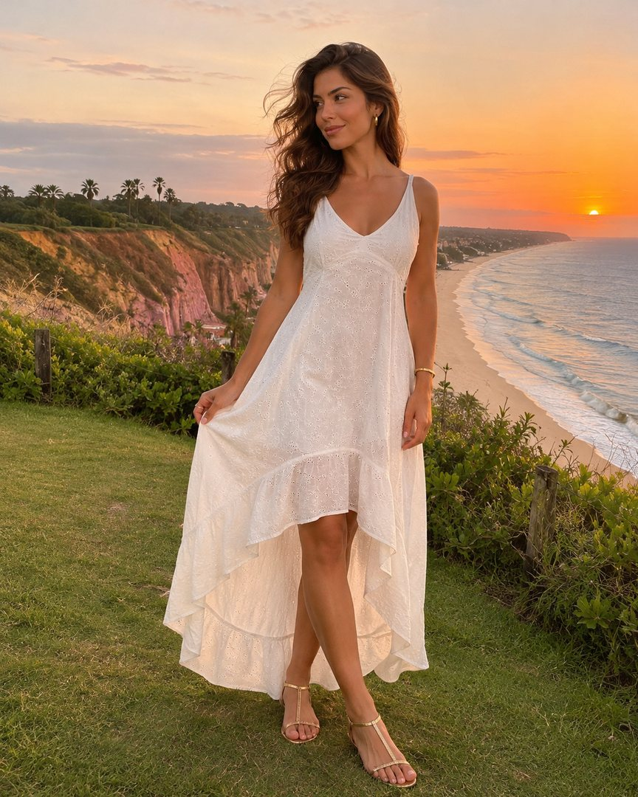
Foto 6Laise branca, alça fina e barra mullet, mais curta na frente.
Ver o vestido na Shopee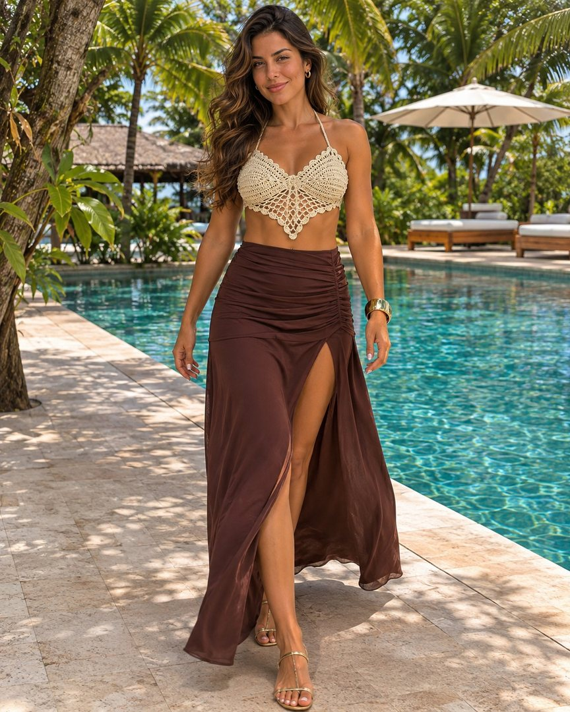
Foto 7Saia marrom franzida no quadril, com fenda lateral.
Ver a saia na Shopee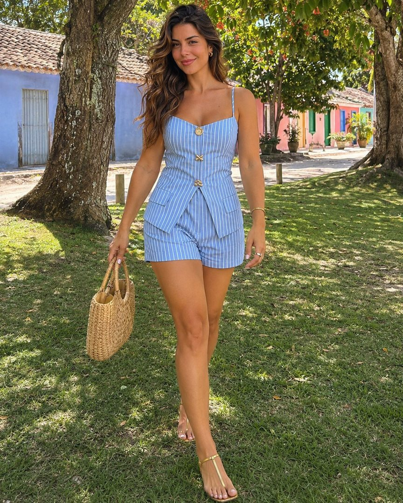
Foto 8Listrado com botões dourados de concha e estrela. Na foto, a cor azul; tem também amarelo, rosa e verde.
Ver o conjunto na Shopee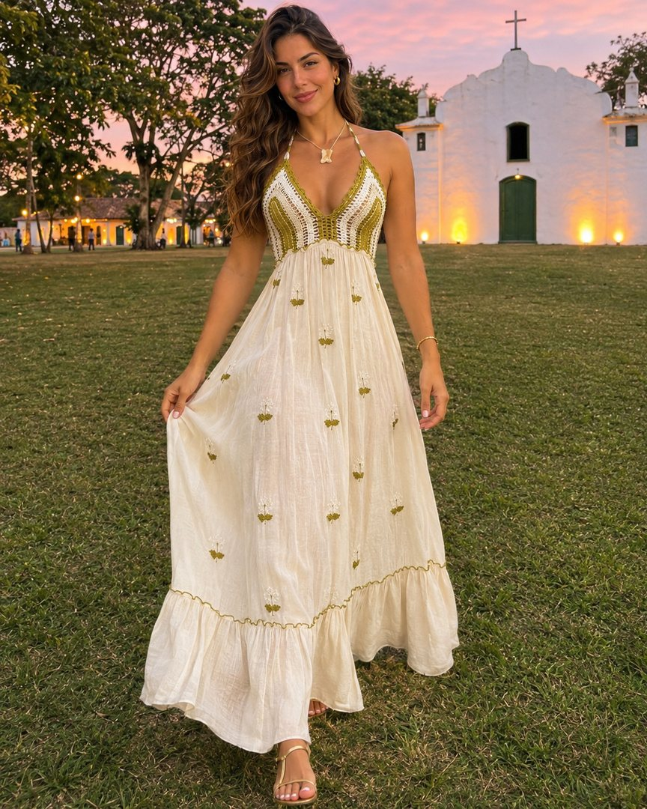
Foto 9Busto de crochê, saia off-white com florzinhas bordadas e babado na barra.
Ver o vestido na Shopee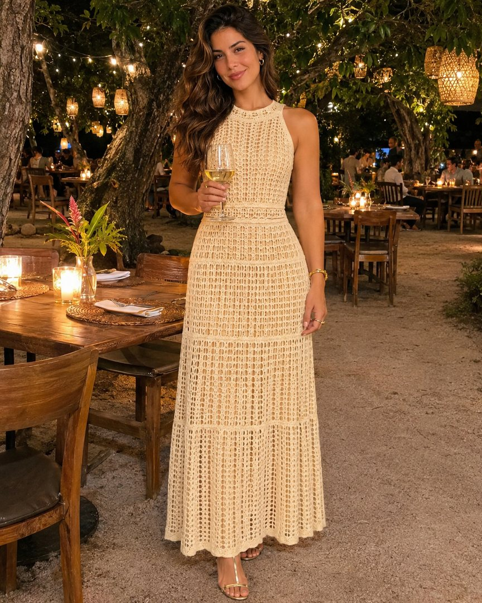
Foto 10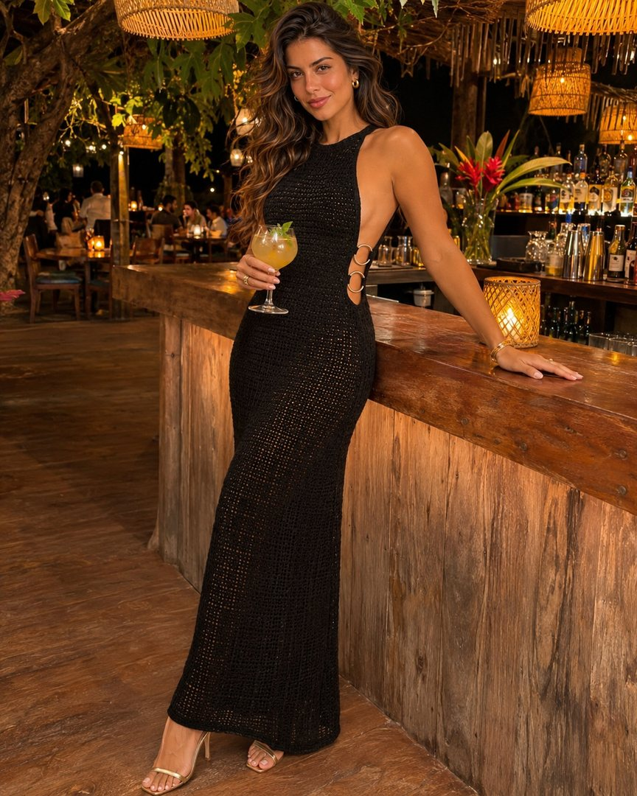
Foto 11Gola alta e recortes laterais com argolas prateadas.
Ver o vestido na Shopee